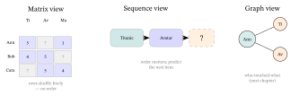
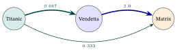
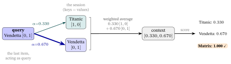
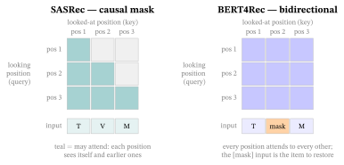

Sequential & Session-Based Recommendation
1. From a matrix to a sequence: what order adds
Traditional CF asks “what rating goes in this empty cell?” — a question about a static matrix in which the rows could be shuffled and nothing would change. But a recommendation log is a stream of events in time:
\[ \text{Ann's history} = (\ \text{Titanic},\ \text{Avatar},\ \underbrace{?}_{\text{next}}\ ). \]
Two facts the matrix cannot see: the events have an order (Titanic came before Avatar), and the most recent ones matter most (what you watched an hour ago predicts your next click far better than what you watched a year ago). Sequential recommendation is the problem of using that order.
Two settings, one task. The literature splits on how much you know about the user:
- Sequential recommendation — you have a long, identified history for each user (their whole watch list), and predict the next item in it.
- Session-based recommendation — you have only the current, short, often anonymous session (the handful of clicks since the page loaded), with no user id at all. This is the harder, very common e-commerce case: a logged-out visitor with three clicks.
Both reduce to the same core question — next-item prediction:
Given the items seen so far, \((i_1, i_2, \dots, i_{t-1})\), score every catalog item for being the next one, \(i_t\), and recommend the top-\(K\).
Notice the shape of the answer is unchanged from Traditional RecSys: a score per item, ranked. What changes is the input — an ordered prefix instead of a user id — and so what the model must capture: which earlier items, in which order, predict what comes next.

Why “sequential” and “session.” Sequential = the model consumes an ordered sequence of past items. Session = one unbroken visit (the clicks between arriving and leaving); session-based models work from that short window alone, with no long-term profile.
2. The simplest sequence model: Markov chains
Start with the crudest possible use of order: the next item depends only on the last one. A (first-order) Markov chain models the sequence by a table of transition probabilities \(P(\text{next}=j \mid \text{last}=i)\) — “after \(i\), how often does \(j\) follow?” — estimated by counting in the log.
Why “Markov.” After Andrey Markov, who studied processes with the memoryless property: the next state depends only on the current state, not the full history. A first-order chain remembers exactly one step back.
Worked example — transitions by counting. Take four tiny sessions over three movies — Titanic (T), Avatar (A), Matrix (M):
\[ \text{T}\!\to\!\text{A}\!\to\!\text{M},\qquad \text{T}\!\to\!\text{A},\qquad \text{A}\!\to\!\text{M},\qquad \text{T}\!\to\!\text{M}. \]
Count every adjacent (from \(\to\) to) pair. From T we see \(\text{T}\!\to\!\text{A}\) twice and \(\text{T}\!\to\!\text{M}\) once (\(3\) transitions out of T); from A we see \(\text{A}\!\to\!\text{M}\) twice (\(2\) out of A). Dividing each count by its row total gives the transition probabilities:
\[ P(\text{A}\mid\text{T})=\tfrac{2}{3}\approx0.667,\quad P(\text{M}\mid\text{T})=\tfrac{1}{3}\approx0.333,\quad P(\text{M}\mid\text{A})=\tfrac{2}{2}=1.0. \]
Per component: the numerator is how often that specific pair occurred; the denominator is how often the from-item appeared as a “from” at all — so each row is a normalized vote that sums to \(1\). Reading it: a user whose last movie was Titanic is predicted to watch Avatar next (probability \(0.667\), the bigger count); a user whose last was Avatar is sent to Matrix (\(1.0\)). The whole “model” is a counted table.

The two limits — and the fix. A plain Markov chain has no memory beyond the last item (it cannot learn “users who saw both Titanic and Avatar like Inception”), and it is not personalized (everyone shares one transition table). The classic remedy is FPMC — Factorizing Personalized Markov Chains (Rendle et al., 2010), which scores the next item as a sum of two dot products:
\[ \hat s(u,\,\text{last}=l,\,\text{next}=i)\;=\;\underbrace{\mathbf p_u\cdot\mathbf q_i}_{\text{matrix factorization: does }u\text{ like }i?}\;+\;\underbrace{\mathbf q'_l\cdot\mathbf q''_i}_{\text{Markov: does }i\text{ follow }l?}. \]
Decoded: the first term is exactly the matrix-factorization score of Traditional RecSys §5 (user taste meets item traits); the second replaces the counted transition table with a learned one — each item gets vectors so that “\(i\) tends to follow \(l\)” becomes a dot product \(\mathbf q'_l\cdot\mathbf q''_i\), which generalizes to pairs never seen together (the same low-rank trick that let MF fill blank cells). FPMC is, in one line, MF plus a factorized Markov step — the hinge between the static matrix and the deep sequence models below.
Why “FPMC.” Factorizing Personalized Markov Chains: it factorizes the transition table into item vectors (so it generalizes), and makes it personalized by adding the per-user MF term.
3. Reading the whole session: GRU4Rec
A Markov chain forgets everything but the last click. To use the whole session we need a model that carries a running summary of it. A recurrent neural network (RNN) does exactly that: it reads the items left-to-right, and after each one updates a hidden state \(\mathbf h_t\) — a fixed-length vector meant to encode “everything relevant so far”:
\[ \mathbf h_t \;=\; f\big(\mathbf h_{t-1},\ \text{embed}(i_t)\big),\qquad \hat{\mathbf y}_t \;=\; \text{scores over all items, from } \mathbf h_t . \]
Decoded: \(\text{embed}(i_t)\) is the current item’s vector (Traditional RecSys §5); \(f\) folds it into the previous summary \(\mathbf h_{t-1}\) to produce the new summary \(\mathbf h_t\); and the next-item scores are read off \(\mathbf h_t\). The state is the memory — unlike the Markov chain, it can in principle carry information from any earlier position.
GRU4Rec (Hidasi et al., 2016) was the model that brought this to session-based recommendation. Its \(f\) is a GRU — a gated recurrent unit, a cell (built in the RNN/LSTM/GRU family of Representation Learning & the Transformer §3) whose gates learn what to keep versus forget from the running state, which is what lets it hold useful context over a longer session without the signal washing out. Two engineering ideas made it work on real logs: session-parallel mini-batches (process many short sessions side by side so the GPU stays busy) and a ranking loss over the next item (a pairwise BPR-style or TOP1 loss — Losses & Regularizers §9 — rather than a full softmax over a huge catalog).
Why “GRU4Rec.” It is a GRU recurrent network for Recommendation; “4” is the internet’s “for.” The point of the name is the cell: a gated RNN reading a session.
The recurrent view has one structural weakness, though: it must compress the entire past into one vector and process strictly left-to-right, step by step. Long-range dependencies fade, and the sequential computation is hard to parallelize. Both complaints are answered by letting each position look directly at every earlier one — attention.
4. Attention over the session: SASRec
The Transformer chapter built self-attention: a mechanism where each position forms a query, compares it (by dot product) against a key at every position, turns those similarities into softmax weights, and reads out a weighted average of the values. SASRec — Self-Attentive Sequential Recommendation (Kang & McAuley, 2018) — is that mechanism applied to a session: stack the item embeddings of the prefix, run self-attention, and the output at the last position is the summary used to score the next item.
Two adaptations make attention fit recommendation:
- A causal mask: when predicting the item at position \(t\), a position may attend only to positions \(\le t\) — never to the future it is trying to predict. (Same lower-triangular mask the Transformer chapter used for left-to-right language models.)
- Positional embeddings: raw attention is order-blind (permute the inputs and the weighted average is unchanged), so SASRec adds a learned position vector to each item embedding, re-injecting “this was the 1st / 2nd / … click.” (We fold this in below and flag it.)
Worked example — one self-attention step, by hand. Ann’s session so far is \((\text{Titanic},\ \text{Avatar})\); predict the next item. Use \(d=2\) embeddings
\[ \text{Titanic}=[1,0],\quad \text{Avatar}=[0,1],\quad \text{Matrix}=[1,1], \]
and — to keep every number checkable — take the query/key/value projections to be the identity (real SASRec learns these matrices and adds positional vectors; here we expose the bare mechanism, exactly as the Transformer chapter first did). The query is the last position, Avatar \(=[0,1]\). Self-attention scores it against the two keys (Titanic, Avatar), scaled by \(\sqrt d=\sqrt2\approx1.414\):
\[ \frac{q\cdot k_{\text{Ti}}}{\sqrt d}=\frac{[0,1]\cdot[1,0]}{1.414}=\frac{0}{1.414}=0, \qquad \frac{q\cdot k_{\text{Av}}}{\sqrt d}=\frac{[0,1]\cdot[0,1]}{1.414}=\frac{1}{1.414}=0.707. \]
(Both positions are \(\le\) the last, so the causal mask blocks nothing here.) Softmax turns the two scores \([0,\,0.707]\) into weights — \(e^{0}=1\), \(e^{0.707}=2.028\), sum \(=3.028\):
\[ \alpha_{\text{Ti}}=\tfrac{1}{3.028}=0.330,\qquad \alpha_{\text{Av}}=\tfrac{2.028}{3.028}=0.670. \]
The context vector is the weighted average of the values (here the embeddings):
\[ \mathbf c = 0.330\,[1,0] + 0.670\,[0,1] = [\,0.330,\ 0.670\,]. \]
Finally, score each candidate next item by its dot product with \(\mathbf c\) (the same “embedding \(\cdot\) summary” head as everywhere else in the book):
\[ \text{Titanic}: [0.330,0.670]\cdot[1,0]=0.330,\quad \text{Avatar}: 0.670,\quad \text{Matrix}: [0.330,0.670]\cdot[1,1]=\boxed{1.000}. \]
Reading it: attention put more weight on the most recent item (Avatar, \(0.670\)) but did not ignore Titanic (\(0.330\)); the resulting context blends both tastes, and Matrix — which shares a feature with each — scores highest (\(1.000\)) and is recommended next. The whole step is dot products and one softmax, no different from the Transformer chapter — only the input (a session) and the read-out (next-item scores) are new.

Why “SASRec.” Self-Attentive Sequential Recommendation: it drops the RNN for the Transformer’s self-attention, so every position reads every earlier one directly — capturing long-range “what predicts what” in one parallel layer.
In practice. Real SASRec stacks a few masked self-attention + feed-forward blocks (Transformer chapter), adds learned positional embeddings, and trains with a binary next-item loss over sampled negatives. Don’t hand-roll it: RecBole and the authors’ released code provide tuned implementations, and SASRec remains one of the strongest, hardest-to-beat baselines in sequential recommendation — always run it before claiming a new model wins.
5. Looking both ways: BERT4Rec
SASRec reads strictly left-to-right: when scoring position \(t\) it may use only the past. That is the right constraint at inference (the future genuinely is unknown), but it makes training one-directional — each item is predicted from its left context only. The Transformer chapter showed a different pretraining recipe: BERT’s masked-language model, which hides random tokens and predicts each from both sides at once.
BERT4Rec (Sun et al., 2019) applies that recipe to sequences. It uses bidirectional self-attention (no causal mask) and trains with the cloze objective: randomly mask a fraction of items in the session and predict each masked item from everything around it — left and right. At inference, it appends a [mask] token to the end of the session and predicts that, recovering next-item recommendation.
Why “BERT4Rec” and “cloze.” It ports BERT (the bidirectional Transformer encoder) to Recommendation. Cloze (from “closure,” Taylor, 1953) is the fill-in-the-blank task from language testing — delete a word and have the reader restore it from context; BERT4Rec deletes an item and restores it from the surrounding session.
The contrast with SASRec is exactly the mask, and it is the cleanest way to see the two designs:

[m] cell) and reconstructing it from the whole surrounding session. The mask is the entire design difference.
Which wins is dataset-dependent — bidirectional context helps when sessions are long and the signal is not purely “most recent,” while the causal SASRec is simpler and often as strong; careful re-evaluations have found the two close once both are tuned. Report both, and tune them equally (the reproducibility caution of the Datasets & Benchmarks appendix applies here too).
6. Training and evaluating a sequence model
Training — every prefix is an example. A single session of length \(n\) is not one training example but \(n-1\): from each prefix \((i_1,\dots,i_{t-1})\) predict \(i_t\). The loss on each is the usual next-item objective — a softmax / sampled-softmax over the catalog, or a pairwise BPR ranking loss (Losses & Regularizers §9–§10) — with negative sampling to avoid scoring millions of items every step (Training and Serving). BERT4Rec instead optimizes the cloze loss (predict the masked positions). Either way the model learns embeddings and attention/recurrence weights by gradient descent (Calculus primer).
Evaluation — split by time, not at random. A sequence model must be graded the way it will be used: predict the future from the past. The standard protocol is the leave-one-last split — for each user, hold out their chronologically last interaction as the test target, the second-last for validation, and train on the rest — then report Hit-Rate@\(K\) and NDCG@\(K\) (Evaluation Metrics). A random train/test split would let the model train on interactions that occurred after the test item — leaking the future and badly inflating the score. This temporal-split discipline, and the leakage trap it avoids, is detailed in the Datasets & Benchmarks appendix.
One-sentence takeaway. Slice each session into prefix→next examples, train the attention/recurrence with a sampled ranking loss, and evaluate by holding out each user’s last interaction — never a random split, which leaks the future a sequence model exists to predict.
7. Where this fits in the book
Sequential recommendation is the order-aware lens on the very same interaction log that the matrix (Traditional RecSys) and the graph (From Graphs to LightGCN) read differently — three complementary views of one stream of events (Figure 1). Its importance to the book is the bridge it builds: SASRec and BERT4Rec are nothing but the self-attention of the Transformer chapter pointed at item sequences, which is precisely why the LLM era that follows feels inevitable — a large language model is a sequence model, and recommending the “next item” is the same shape of problem as predicting the next token.
| Idea (here) | Where it returns |
|---|---|
| Item embeddings, scored by a dot product (§2, §4) | the embeddings of Traditional RecSys §5 and From Graphs to LightGCN |
| Self-attention over a session (§4) | the Transformer chapter’s mechanism, reused; the on-ramp to LLM × RecSys |
| Causal vs. cloze masking (§5) | the GPT-style vs. BERT-style pretraining of the Transformer chapter |
| Next-item softmax / BPR loss (§6) | Losses & Regularizers §9–§10 |
| Leave-one-last split, HR@\(K\) / NDCG@\(K\) (§6) | Evaluation Metrics; the leakage discussion of the Datasets & Benchmarks appendix |
Carry this forward: the matrix forgets order; a sequence model remembers it — from a one-step Markov count, to a recurrent summary, to self-attention that lets the next item look back over the whole session. That last step is the Transformer, which is also what the LLM era runs on.
8. Exercises
Work these by hand — the numbers are kept tiny on purpose, and reuse the chapter’s Titanic/Avatar/Matrix sessions. Full worked solutions are in the Solutions appendix at the back of the book.
(compute) From §2’s four sessions, you counted the transitions out of T and A. Now suppose a fifth session \(\text{M}\!\to\!\text{T}\) is added. Recompute \(P(\text{next}\mid\text{last}=\text{M})\). What is special about a “from-M” row before this session is added?
(compute) A first-order Markov chain predicts the next item from the last one only. Given the chain of §2 (\(P(\text{A}\mid\text{T})=0.667\), \(P(\text{M}\mid\text{T})=0.333\)), which item does it recommend after a session ending in Titanic, and why can it not use the fact that the user also saw Avatar earlier in a longer session?
(compute) Redo §4’s self-attention step but with the session \((\text{Avatar},\ \text{Titanic})\) — i.e. the same two items in the opposite order, so the query is now Titanic \(=[1,0]\). Using identity projections and \(\sqrt d=\sqrt2\), compute the two raw scores, the softmax weights, the context vector, and the three candidate scores. Which item is recommended now, and why did reversing the order change the answer?
(compute) In §4 the softmax turned raw scores \([0,\,0.707]\) into weights \([0.330,0.670]\). Verify the larger weight by hand: compute \(e^{0.707}/(e^{0}+e^{0.707})\) using \(e^{0.707}\approx2.028\).
(compute) Using §4’s context vector \(\mathbf c=[0.330,0.670]\), score a fourth candidate “Inception” with embedding \([2,0]\). Where does it rank against Titanic (\(0.330\)), Avatar (\(0.670\)), and Matrix (\(1.000\))? Its raw dot-product score is large mostly because of what property of its vector — and which §-of-an-earlier-chapter bias does that echo?
(concept) §3’s RNN keeps a hidden state \(\mathbf h_t=f(\mathbf h_{t-1},\text{embed}(i_t))\). In one or two sentences, explain what \(\mathbf h_t\) is supposed to store, and the one structural weakness (versus self-attention) that motivated SASRec.
(concept) SASRec uses a causal mask; BERT4Rec uses bidirectional attention with a cloze objective. Explain why SASRec must mask the future during training, yet BERT4Rec is allowed to look both ways — what is different about the two training tasks?
(concept) Raw self-attention is order-blind: permuting the inputs leaves the weighted average unchanged. What does SASRec add to fix this, and why does a sequence model need it when a bag-of-items model would not?
(concept) You evaluate a sequence recommender with a random train/test split and get a suspiciously high NDCG@10. Explain the leakage that random splitting causes for sequence data, and what split (§6) fixes it.
(apply) FPMC (§2) scores the next item as \(\mathbf p_u\cdot\mathbf q_i+\mathbf q'_l\cdot\mathbf q''_i\). Say which term dominates for (a) a brand-new, anonymous session with a strong “last item” signal, and (b) a long-time user whose tastes are well known but whose last click was an accidental mis-tap. Which model of this chapter keeps only the second (Markov) term?
9. Glossary
| Term | Plain meaning |
|---|---|
| Sequential recommendation | Predict the next item from a user’s ordered history. |
| Session-based recommendation | Same, but from a short, often anonymous current session (no user id). |
| Next-item prediction | The core task: given \((i_1,\dots,i_{t-1})\), score every item for being \(i_t\). |
| Markov chain (first-order) | Next item depends only on the last one; transitions estimated by counting. |
| Transition probability | \(P(\text{next}=j\mid\text{last}=i)\) — count of \(i\!\to\!j\) over count of \(i\)-as-from. |
| FPMC | Factorizing Personalized Markov Chains: MF term \(+\) a learned (factorized) transition term. |
| RNN / hidden state \(\mathbf h_t\) | A net that folds each item into a running fixed-length summary of the session. |
| GRU4Rec | A gated RNN for session-based recommendation; session-parallel batches + a ranking loss. |
| Self-attention | Each position attends (by dot-product softmax) to others, reading a weighted average (Transformer chapter). |
| SASRec | Self-Attentive Sequential Recommendation: a causal Transformer over the item sequence. |
| Causal mask | Lower-triangular mask: position \(t\) may attend only to positions \(\le t\) (no peeking at the future). |
| Positional embedding | A learned per-position vector added to item embeddings so attention can see order. |
| BERT4Rec | A bidirectional Transformer trained with the cloze (masked-item) objective. |
| Cloze objective | Mask random items and predict each from both-side context (fill-in-the-blank). |
| Leave-one-last split | Hold out each user’s chronologically last interaction for test (temporal, leak-free). |
| Hit-Rate@K / NDCG@K | Was the held-out next item in the top \(K\)? / how high was it? (Evaluation Metrics). |
10. References
Rendle, S., Freudenthaler, C., & Schmidt-Thieme, L. (2010). Factorizing personalized Markov chains for next-basket recommendation. In Proceedings of the 19th International Conference on World Wide Web (WWW). https://doi.org/10.1145/1772690.1772773
Hidasi, B., Karatzoglou, A., Baltrunas, L., & Tikk, D. (2016). Session-based recommendations with recurrent neural networks. In International Conference on Learning Representations (ICLR). arXiv:1511.06939
Kang, W.-C., & McAuley, J. (2018). Self-attentive sequential recommendation. In Proceedings of the 18th IEEE International Conference on Data Mining (ICDM). arXiv:1808.09781
Sun, F., Liu, J., Wu, J., Pei, C., Lin, X., Ou, W., & Jiang, P. (2019). BERT4Rec: Sequential recommendation with bidirectional encoder representations from transformer. In Proceedings of the 28th ACM International Conference on Information and Knowledge Management (CIKM). arXiv:1904.06690
Wang, S., Cao, L., Wang, Y., Sheng, Q. Z., Orgun, M. A., & Lian, D. (2021). A survey on session-based recommender systems. ACM Computing Surveys, 54(7). https://doi.org/10.1145/3465401
Online sources verified June 2026.